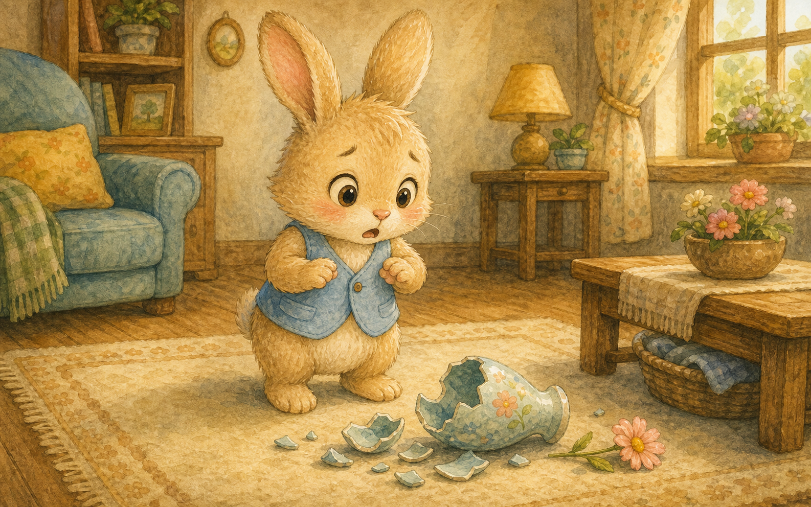
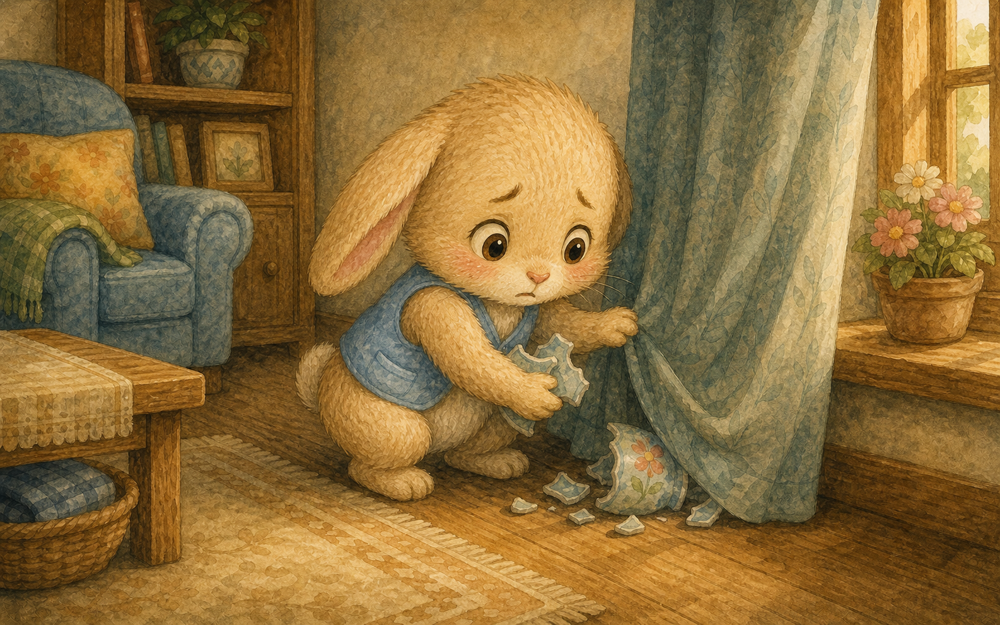
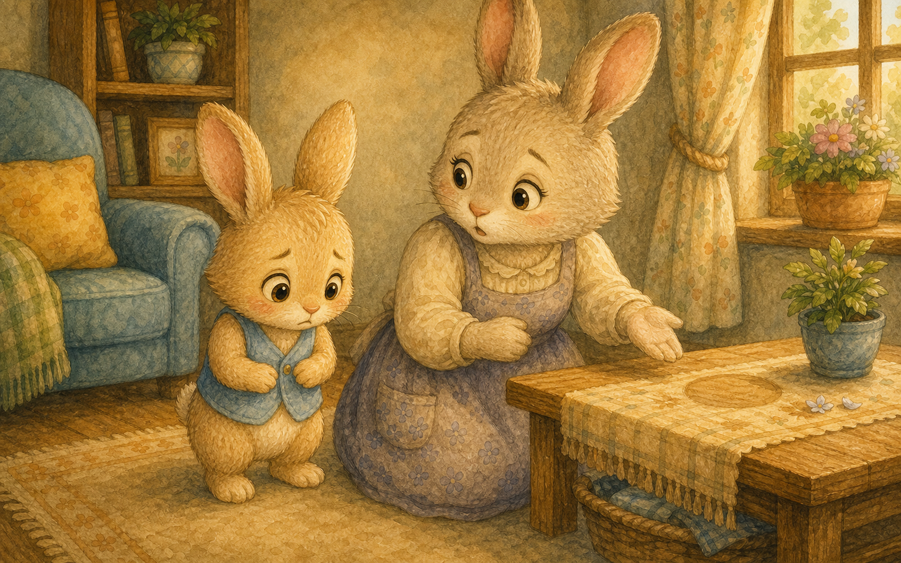
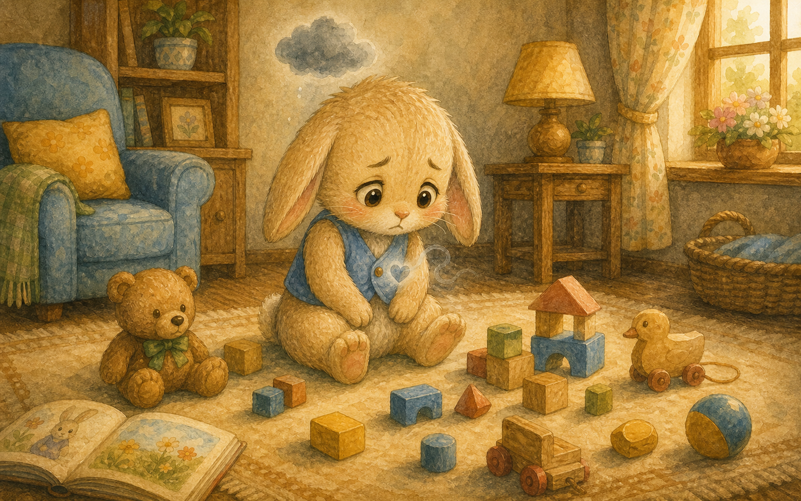
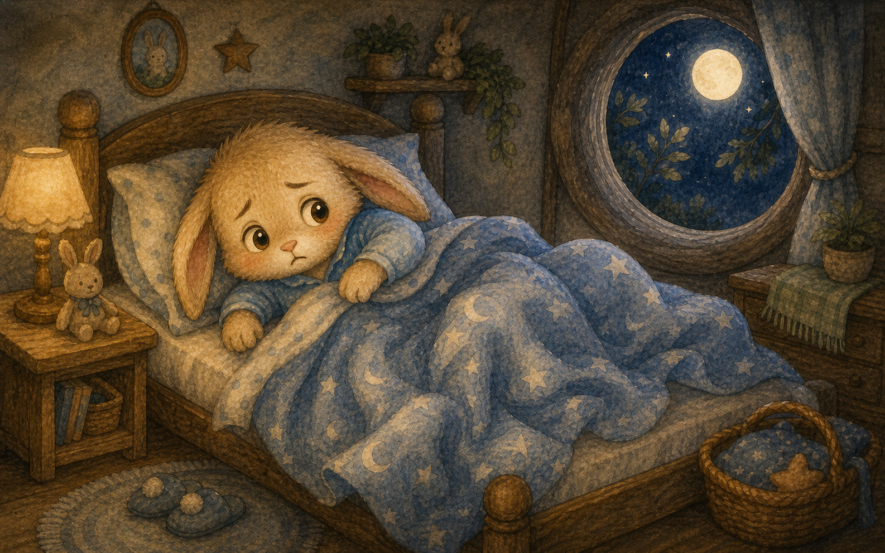
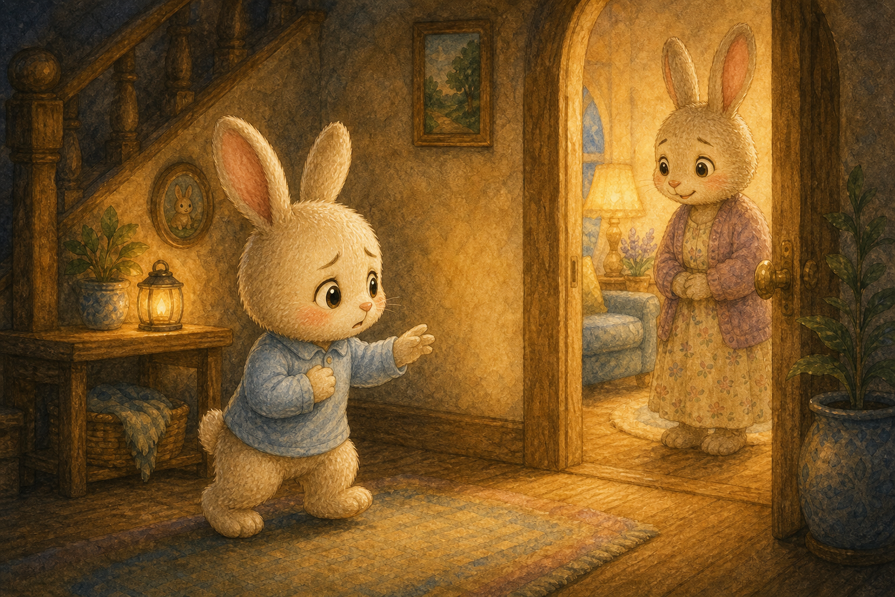
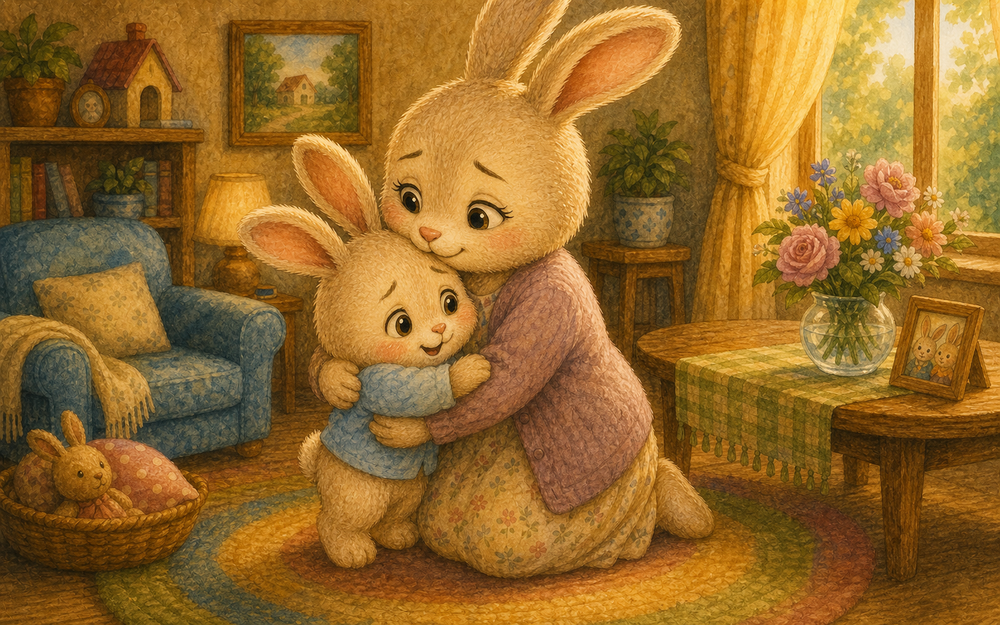
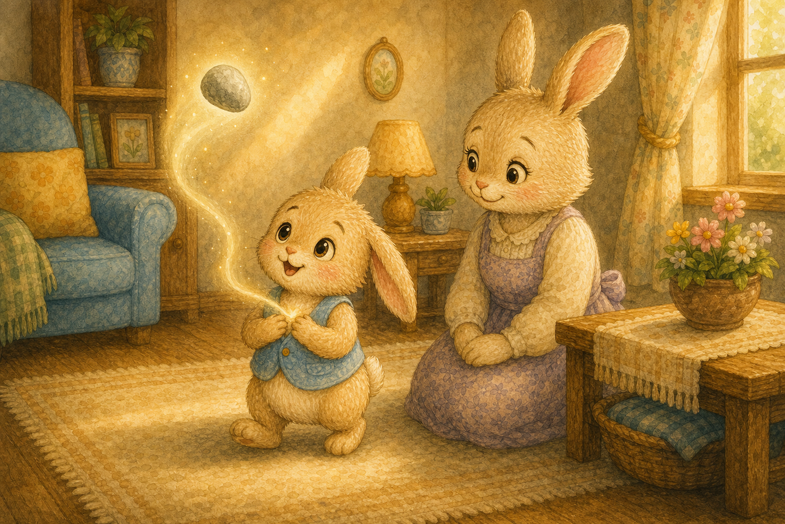
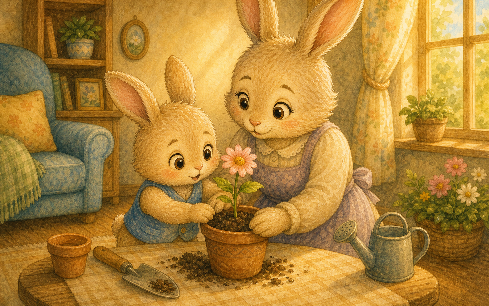
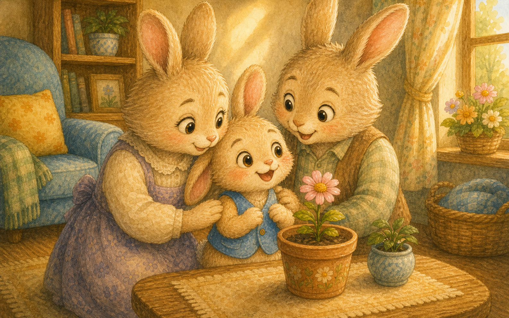

쨍그랑, 꽃병
토끼 콩이가 거실에서 뛰놀다 그만 꽃병을 깼어요. 쨍그랑 소리에 콩이는 깜짝 놀랐지요.
"어떡하지? 엄마가 알면…"

토끼 콩이가 거실에서 뛰놀다 그만 꽃병을 깼어요. 쨍그랑 소리에 콩이는 깜짝 놀랐지요.
"어떡하지? 엄마가 알면…"

콩이는 깨진 조각을 커튼 뒤로 슬쩍 숨겼어요. 아무도 모를 거라고 생각했답니다.
"내가 안 그랬다고 하면 되지."

엄마 토끼가 빈 자리를 보고 누가 그랬냐고 물었어요. 콩이는 "나 아니야"라고 작게 대답했지요.
하지만 가슴이 콩콩, 무거워졌어요.

거짓말을 하고 나니 노는 것도 재미가 없었어요. 마음속에 돌멩이가 하나 들어앉은 것 같았지요.
"왜 자꾸 마음이 콕콕 아프지?"

밤이 되어도 콩이는 잠이 오지 않았어요. 거짓말이 마음을 자꾸 콕콕 찔렀답니다.
"솔직하게 말할 걸 그랬어."

다음 날 아침, 콩이는 용기를 내어 엄마에게 갔어요. 떨리는 목소리로 솔직하게 말하기로 했지요.
"엄마, 사실은 제가 꽃병을 깼어요."

엄마는 화내지 않고 콩이를 꼭 안아 주었어요. 솔직하게 말해 줘서 정말 고맙다고 했지요.
"실수는 누구나 해. 말해 줘서 고마워."

솔직하게 말하자 마음속 돌멩이가 사라졌어요. 콩이는 가슴이 깃털처럼 가벼워졌답니다.
"이제 마음이 하나도 안 아파!"

콩이는 엄마와 함께 새 화분에 꽃을 심었어요. 실수를 솔직히 말하고 함께 고치니 더 뿌듯했지요.
"다음엔 조심해서 뛸게요."

콩이는 솔직하게 말할 때 마음이 가장 편하다는 걸 알았어요. 이제 작은 일도 거짓말 없이 말하기로 했답니다.
"솔직하면 마음이 반짝반짝!"